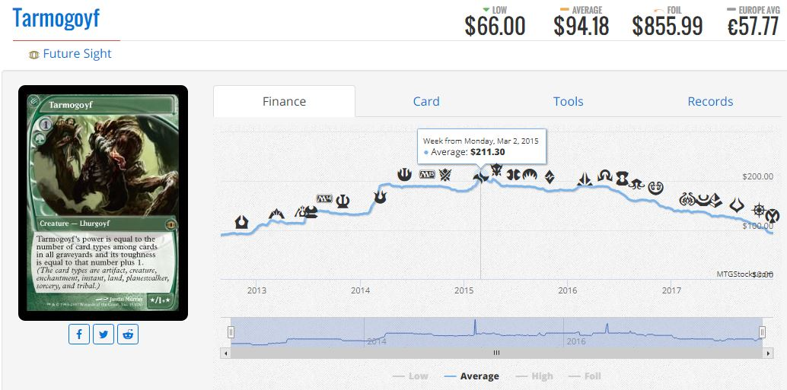

Introduction
It really is very impressive that 4 times a year, a new set of magic cards with at least 150 new cards is released. However, not all of these cards are completely new. Sometimes, the price of an older card is too high, or an older card would fit well with the flavor or mechanics of a new set. For a myriad of reasons, sometimes Wizards of the Coast will recycle old designs and “reprint” an old card into a new set. Sometimes this is inconsequential, but other times it can have a massive effect on the secondary market. Let’s look first at the Lorwyn printing of the card Thoughtseize, first printed in 2007: As we can see, Thoughtseize was a heavily sought after card, fetching a hefty price of $65.00 due to extensive play in Modern and Legacy. However, the card suffered a massive price crash in the weeks leading up to the Theros set in 2013, as it was revealed that Thoughtseize would be reprinted in the upcoming set. There are many different examples and scenarios where a card can be reprinted, so we’ll be looking at some of those in this article.Standard Reprints
Thoughtseize is a good example of reprints that take an old card and put it back into standard, but there are other notable examples as well.Goblin Piledriver was originally printed in the Onslaught set in 2002, so many people were surprised when it was announced as a reprint in Magic: Origins in 2015. Before its reprint, the card was around $17.00 due to casual appeal and some play in Legacy Goblins decks. As opposed to Thoughtseize, whose value decreased when it was announced as a standard reprint, Piledriver spiked to $30.00 before its reprinted release. This is because while Thoughtseize was a hugely in demand card before its reprinting, and was mainly in demand for its eternal applications, Piledriver was a surprise reprint that introduced a card many thought would be broken in standard. Piledriver did not make big waves in standard, and in the long run the reprint massively decreased its price.
Another example of a standard reprint tanking a card’s value is in Felidar Sovereign, originally printed in Zendikar in 2009, then reprinted in Battle for Zendikar in 2015.
Felidar Sovereign’s main appeal was in casual formats, as is true with most alternative win conditions. The new reprint made the card more accessible due to adding to the supply, but more importantly, it changed the rarity from Mythic Rare to Rare, making the card much more accessible to most people, and thus causing the massive price crash from $11.00 before the reprinting to less than $2.00 now.
Masters Set Reprints
Wizards of the Coast releases a supplemental set every year in the Masters series, which are 200+ card sets completely composed of reprints. This is mainly to increase the availability of format staple cards in Modern and Legacy to make each of the expensive formats more accessible. This has the blanket effect of making almost every card reprinted in the set decrease in price, but some more than others. Cards that have not been previously reprinted or their original printing was in a not very popular set, such as Serum Visions and Mishra’s Bauble are more likely to have their prices more heavily affected by Masters Sets. Cards that have multiple reprints and have always been in high demand, such as Dark Confidant, Cryptic Command, or Tarmogoyf tend to be relatively unaffected by these masters reprints.  Another potential factor in the effectiveness of reprints is the rarity at which they are reprinted at. Serum Visions and Mishra’s Bauble were reprinted at Uncommon rarity, which made their supply increase much more than Dark Confidant or Tarmogoyf who were reprinted at Mythic Rare.Ixalan Reprints
Ixalan has two high profile reprints that may have an effect on the secondary market, the "Checkland" rare land cycle and Opt, a cantrip last printed in Invasion in 2000 that is now modern legal for the first time. The Checklands will slightly increase in value due to being available in standard again, but Opt is the really interesting case in Ixalan. Before Opt was announced as being reprinted, it was a bulk $0.25 card, but after its spoiling it immediately shot to $3.00. The reason for this is pretty simple; before Opt's printing in Ixalan, it was competing with some of the best cantrip spells ever printed in Ponder and Preordain to see play in Legacy, which it rarely did. However, now that it is legal in modern, where Ponder and Preordain are banned, its biggest competition is Serum Visions, which it is better than in many decks. Opt also sees play in standard, making it one of the most powerful cards printed in Ixalan.Copyright 2017 Ian Rickles